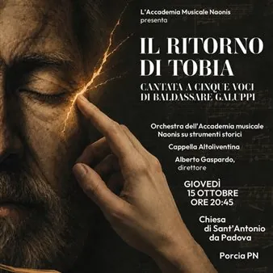

gio 15 ott · dalle 20:45
Il ritorno di Tobia
IL RITORNO DI TOBIA - Cantata a cinque voci di Baldassarre Galuppi Orchestra dell'Accademia Musicale Naonis su strumenti storici Cappella Altoliventina Alberto Gaspardo - direttore L'opera "Il ritorno di Tobia", cantata a cinque voci composta nel 1782 dal celebre maestro…
 Indicazioni
Indicazioni
- Costi e prenotazioni
- Costo non indicato · Prenotazione non indicata
- Programma
- Programma da verificare. Apri la fonte ufficiale per orari e possibili aggiornamenti.
- In caso di maltempo
- Nessuna indicazione specifica pubblicata.
- Note
- Acquisito automaticamente dalla fonte.
L’EVENTO
Descrizione completa
IL RITORNO DI TOBIA - Cantata a cinque voci di Baldassarre Galuppi Orchestra dell'Accademia Musicale Naonis su strumenti storici
Cappella Altoliventina
Alberto Gaspardo - direttore L'opera "Il ritorno di Tobia", cantata a cinque voci composta nel 1782 dal celebre maestro veneziano Baldassare Galuppi, trasforma una storia biblica in un intenso teatro degli affetti. Sinfonie e arie di raffinata eleganza conducono dall’angoscia alla speranza, tra slanci festosi e momenti intimi. Una musica viva che racconta la guarigione del corpo e la salvezza dell’anima. Il progetto porta in scena una trascrizione inedita a cura del M° Elia Pivetta (realizzata nel 2021 e pubblicata dall'Istituto Italiano per la Storia della Musica), restituendo all'ascolto un capolavoro di rara esecuzione e grande pregio artistico. Il concerto si inserisce all'interno della programmazione musicale del territorio purliliese come VIII edizione di un appuntamento nato nel 2018 e divenuto ormai una solida tradizione per la comunità di San Antonio. In seguito all'installazione e inaugurazione del nuovo Organo Zanin, la Parrocchia di Sant’Antonio di Porcia, in sinergia con l'Amministrazione Comunale e il territorio provinciale, punta ad affermarsi come polo d'eccellenza e centro di divulgazione musicale a livello interregionale. La data del 15 Ottobre 2026 segna la prosecuzione di questo percorso di storicizzazione, valorizzazione e crescita culturale. Ingresso gratuito
Per info: accademianaonis@gmail.com
IL PROGRAMMA
Programma e orari
Appuntamenti raccolti dalle fonti elencate. Dove manca un orario, non è ancora disponibile in questa scheda.
Programma pubblicato
- Dal 2026-10-15 al 2026-10-15
INFORMAZIONI UTILI
Prima di partire
- Controllare la fonte prima di partire.
ORGANIZZAZIONE